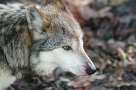
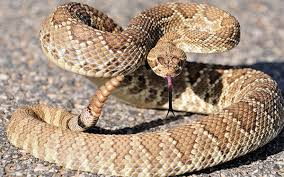

| Número | Animal | Descripción | Lugar donde vive | Imagen |
| 1 | TIGRE | Es un cuadrúpedo de patas gruesas, mandíbulas y dientes fuertes y característico patrón de coloración. Al respecto, su pelaje presenta un tono amarillo a naranja claro | India, Nepal, Bangladés, Bután, Birmania y Tíbet. | |
| 2 | ELEFANTE | Son animales grandes con grandes orejas y una larga trompa,son animales mamíferos, exclusivamente herbívoros | África | |
| 3 | LOBO MEXICANO | Es un animal con tamaño similar al de un perro con un pelaje gris | México |  |
| 4 | SERPIENTE DE CASCABEL | Las serpientes de cascabel son un género de la subfamilia de las víboras de foseta dentro de la familia de los vipéridos. | América |  |